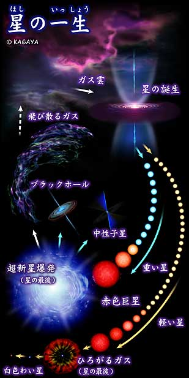
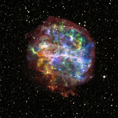
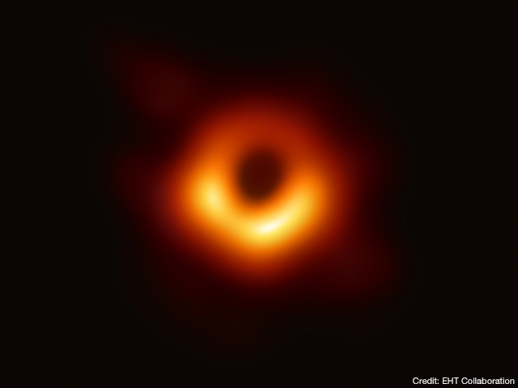

(2025/03/16)
恒星は核融合によってエネルギーを出しています。核融合には水素や核融合などが必要です。必要なものを全て使い果たした時がその星の寿命となります。
超新星爆発
核融合ではエネルギーと核融合で使用された物質より重いものが生成されます。

（イメージ：http://www.astromuseum.jp/star/livestar/07_nova.html）
恒星は重力によって中心につぶれる力と核融合による外向きへの力が釣り合うことによって形を維持しています。
しかし核融合できない重い物質が徐々に恒星の中心にたまっていき、中心への力が大きくなった時、一気に収縮し始めその時のエネルギーを放出します。
これが超新星爆発です。
太陽は質量がそこまで大きくないので超新星爆発を起こさずに最後はガスを放出し白色矮星となります。
太陽の8倍以上の質量をもつ恒星は超新星爆発を起こしその周囲に散らばったガスからまた新たな星が誕生していきます。

（イメージ：X-ray: NASA/CXC/Penn State/S.Park et al.; Optical: Pal.Obs. DSS）
星の残骸
超新星爆発を起こした後中性子星かブラックホールが残ります。
中性子性
中性子性は太陽の質量の8～30倍の恒星で発生します。直径が20km程度と小さく1立方センチメートルで約十億トンの重さです。
地球の8兆倍の磁場を持ち時速2億km以上で自転をするので数秒に一回地球を向いたとき電波を受け取ることができます。
このような性質から宇宙の灯台と呼ばれています。
ブラックホール
ブラックホールは太陽の質量の30倍以上の恒星で発生します。直径は3km。惑星や恒星の重力圏から出るために必要な速度である脱出速度
というものがありますが、ブラックホールの場合光速の秒速30万kmでも脱出ができません。光が出てこないのでブラックホールを直接観測することは不可能です。
よく光が抜け出せるか否かの境界である事象の地平面がブラックホールの大きさとされています
ブラックホールに吸い込まれる際ブラックホールから遠い地点と近い地点の重力の差によって引き延ばされます。これをスパゲッティ効果
と呼びます。これによって人間が落ちた場合、完全にバラバラにされるでしょう。
付近の物質が集まってくるので降着円盤を形成します。そこでは摩擦によってX線などを放出します。
これを観測することでブラックホールの間接的な観測を行うことができました。

動画でさらに理解を深めよう！
あとがき
今は発表12時間前で時間がないのでここにあとがきと出典書きます。何か書くことないかなと思って前回のあとがき見たら発表13時間前に書いてるって．．．
行動パターンは1年前と変わりませんね。では書くことないのでこれで。
出典
Gakken 学研の図鑑LIVE宇宙
ナショナルジオグラフィック https://natgeo.nikkeibp.co.jp/atcl/news/16/100400375/
BINESS INSIDER https://www.businessinsider.jp/article/202168/
http://www.astromuseum.jp/star/livestar/07_nova.html